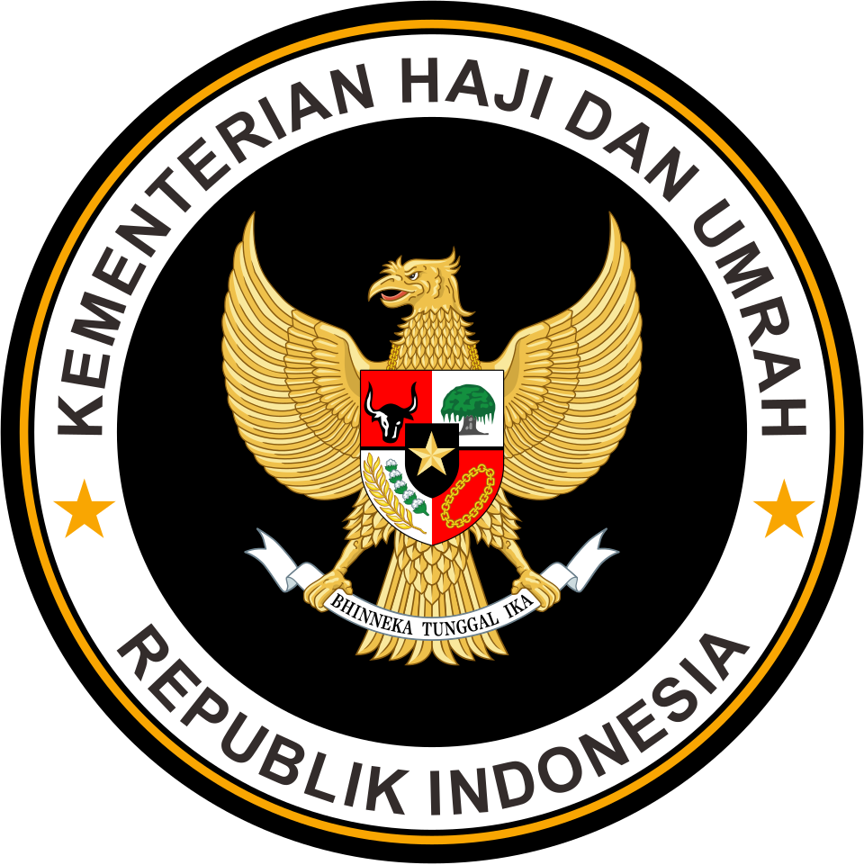

1447 H · 2026 M
Kementerian Haji dan Umrah Republik Indonesia Kantor Wilayah Provinsi Gorontalo
Dalam rangka meningkatkan kualitas pelayanan ibadah haji tahun 1447 H / 2026 M, Kementerian Haji dan Umrah Provinsi Gorontalo mengundang Bapak/Ibu untuk mengisi survey kepuasan pelayanan berikut ini.
Masukan yang Bapak/Ibu berikan akan menjadi bahan evaluasi dan perbaikan pelayanan haji di masa mendatang. Mohon diisi dengan jujur sesuai pengalaman selama proses pelayanan berlangsung.
Formulir Survey